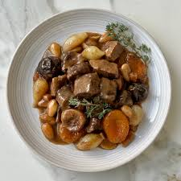

Osmanlı Mutfağının İhtişamı: Mutancana Tarifi
Osmanlı mutfağına ait et yemeği olan Mutancana, kuzu eti, kuru kayısı, erik, badem ve bal gibi malzemelerle hazırlanıyor. Osmanlı döneminde saray sofralarında tercih edilirdi.
Mutancana tarifi, baldan ve kuru meyvelerden tatlılık, sumaktan ekşilik, bademlerden kıtırlık ve etlerden yumuşacık bir doku bırakacak.
Bol proteinli ve bol lifli bu enfes yemeğin suyunu da ne kadar anlatsak az.
Mutancana'nın Kalorisi Ne Kadar: 1 porsiyon için 659/kcal
|

|
| Kaç Kişilik |
Hazırlama Süresi |
Pişirme Süresi |
| 6 kişilik |
15 dakika |
1 saat |
Mutancana Tarifi İçin Malzemeler
500 gram kuzu kol kuşbaşı
2 yemek kaşığı zeytinyağı
1/2 çay bardağı kuru üzüm
1/2 çay bardağı çiğ badem
|
Mutancana Tarifi Nasıl Yapılır?
- Mutancana için ısıttığınız tencereye tereyağını alın ve eritin. Zeytinyağını ve ardından etleri ekleyip iyice kavurun.
- Etlerin her tarafı renk alınca sarımsakları ekleyin. Etler suyunu çekince un ekleyin ve karıştırın.
- Unun kokusu çıkınca, suyu ekleyin ve tencerenin altını kısın. Kapağı kapalı bir halde pişirin.
- Sıcak suda bekletilmiş kuru üzümleri, erikleri, incirleri, bademleri, sumağı, balı ve tuzu ekleyin. Nazikçe karıştırın.
- Kapağını kapatıp kısık ateşte 1-2 dakika daha pişmesini bekleyin ve altını kapatıp 15-25 dakika dinlenmeye bırakın. Mutancana hazır. Afiyet olsun.
Önemli Not: Ben soğandan nefret ettiğim için tariften arpacık soğanı çıkardım. Bence siz de hayatınızdan soğanı çıkarın, inanın çok rahat edeceksiniz.
|